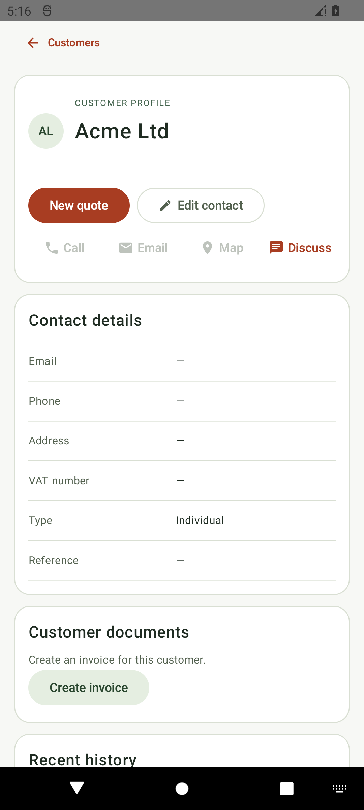
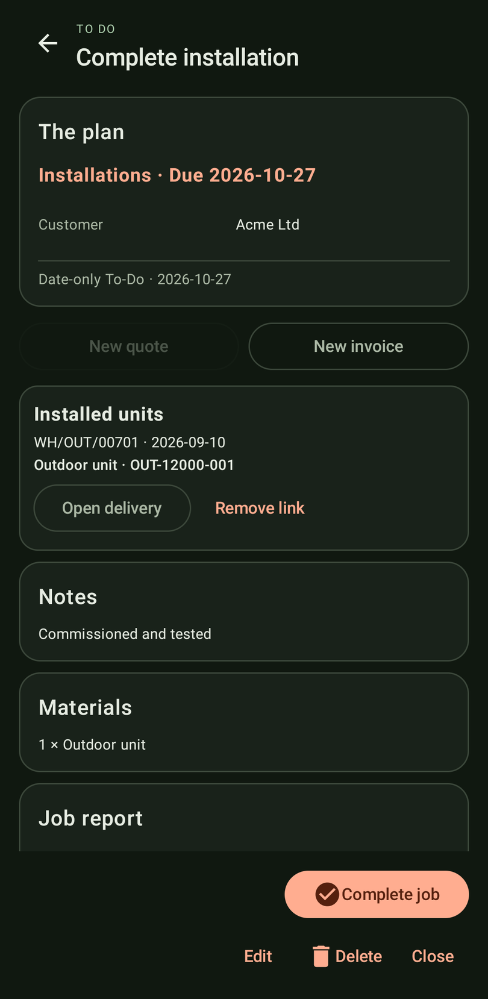
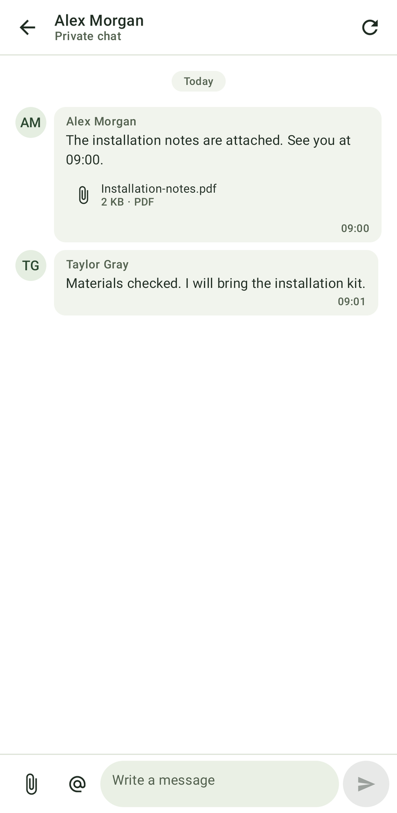
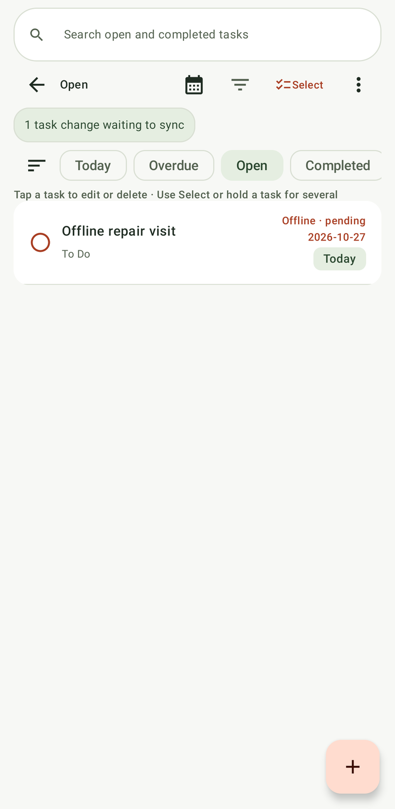
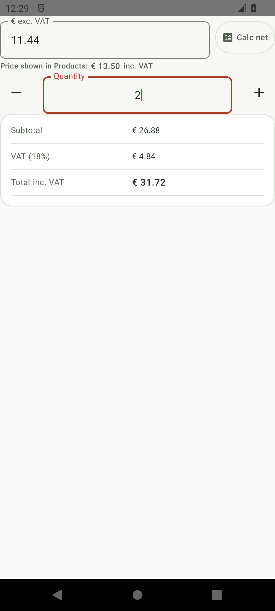

Customer relationships
Search, create and edit contacts and addresses. Call, compose an email, map the address or open the shared discussion. Explore the customer’s To Dos, quotations, sales orders and invoice history, plus photos and documents.
NATIVE ANDROID · ODOO 19
The customer visit. The next quotation. The job that needs finishing. Bring your Odoo workspace with you, in one focused Android app.
72-hour free trial · No automatic charge


Your workspace, wherever you go.
01 / YOUR DAILY WORKSPACE
Start with the overview. Move between To Do, Sales, Money and More. Your Odoo permissions and selected company shape the tools you see.
Contacts, history, documents and the next conversation.
Customers & sales ↗ 02Tasks, appointments and field jobs that stay connected.
Planning & field work ↗ 03Invoices, stock, deliveries, purchasing and payments.
Money & operations ↗ 04Native Odoo chats, shared discussions and widgets.
Team & connection ↗02 / CUSTOMERS & SALES
Open a customer and see the context that matters. Turn an enquiry into a quotation, a sales order and a draft invoice through Odoo’s standard workflow.
Search, create and edit contacts and addresses. Call, compose an email, map the address or open the shared discussion. Explore the customer’s To Dos, quotations, sales orders and invoice history, plus photos and documents.
Edit draft lines with company pricelists, quantity-aware pricing and permission-aware margins. Confirm orders, review cancellation consequences and restore cancelled documents to draft.
See prices and available stock. Create and edit single-variant products. Use Calc net with actual Odoo tax rules, clear totals and price references in quotation and invoice editors.
The customer profile connects contact details, business documents and history.
03 / PLAN IT. DO IT. FINISH IT.
TO DO & CALENDAR
Create, edit, schedule, complete and reopen Odoo activities. Find today’s work, overdue tasks and completed jobs. Link a customer and start a prefilled quote or invoice directly from the task.

Carry materials, travel buffers and installation checklists with the task. Capture job photos, signatures and documents. Share a job-report PDF and hand the ordered appointments to your maps app.
Repeat tasks advance when you complete them in BizNii.
04 / MONEY & OPERATIONS
Follow the business from the first order to the delivery, invoice and payment. Review consequential actions before they reach Odoo.
Create and edit draft invoices with dates, references, customer and product lines, taxes and prices. Review before posting. Register payments through the configured bank/cash journal; create credit notes as drafts for review.
Invoice features ↗Explore receivables and payables in current, 1–30, 31–60, 61–90 and 91+ day buckets. Share branded, paginated customer statements and calendar-year P&L, bank/cash and VAT summaries. Prepare payment reminders in your mail app.
Reporting scope ↗Check on-hand, forecast, incoming, outgoing and low stock. Look up barcodes with a camera or hardware scanner. Reserve deliveries and complete supported transfers, tracked receipts, serial adjustments and stock counts.
Inventory features ↗Search suppliers, edit draft RFQs, review purchase orders, arrivals and vendor references. Confirm within Odoo approval rules, cancel or restore eligible drafts, share PDFs and prepare vendor bills for eligible quantities.
Purchasing features ↗Per-location van stock shows on-hand, reserved and available quantities. Send replenishment deficits into a reviewed draft RFQ. Look up serial-number warranties and share local certificates with unknown expiry shown clearly.

The same conversation, carried with you.
05 / TEAM, WIDGETS & REMINDERS
Start native Odoo direct or group chats, mention internal users, and attach photos or files. Open shared business-record discussions from a familiar message box. Inbox, Mentions and unread state help you find what needs attention.
An adaptive full-month activity widget includes task colours, completed work, overdue styling, pending summaries and date shortcuts. The Discussion widget brings All, Inbox and Mentions to the home screen with refresh and shortcuts to your conversations.
Opt into appointment warnings, due-today reminders and overdue digests every 6 or 12 hours. Use Settings → Notifications → Show overdue summary now to request an expandable summary from the current workspace’s saved tasks. Low-stock and overdue-invoice alerts are also optional. Appointment reminders follow your Android notification and alarm settings. Expand an overdue notification to see available task details; Android may initially show only the count. Business alerts show counts, and lock-screen public content is redacted.
Sending private messages requires a connection. Background message checks run periodically and may be delayed by Android battery settings.
YOUR WORKSPACE, AT YOUR FINGERTIPS
Overview, To Do, Sales, Money and More. Your everyday Odoo work, organised around the way you use it.
Tap the tabs, cards and highlighted actions to explore the app with sample data.
Follow outstanding invoices, financial summaries and your next actions in one place.

06 / INSIDE THE APP
See your calendar, job details, offline tasks and pricing up close. Keep conversations connected as you move between your desk and your phone.
Read a message, send your reply and keep your team moving. Native Odoo conversations travel with your work.
View screenshot ↗
View screenshot ↗
View screenshot ↗07 / CONNECTED. PROTECTED.
Switch between named Odoo connections and companies. Open cached work quickly. Keep credentials, tasks and queued changes protected on the device.
Read saved customers and tasks offline. Supported To-Do changes and job attachments are kept securely until they can sync. Review any conflicts when you reconnect.
Use an API key or username/password. Test before saving a profile. Select a company per connection; permissions, caches, recent records, favourites and queued tasks keep their profile and company context.
Saved credentials, business records and pending task changes are encrypted on your device. Secure connections, optional trusted-server settings, section locks and screenshot privacy controls help protect your information.
Review your access permissions, saved records and pending changes. Check synchronization issues, choose whether to share a support report, and clear saved records without deleting them from Odoo.
08 / FEATURE DIRECTORY
Find the tools for your day. Search across every workspace by workflow, product or action.
No matching features. Try another term or choose all workspaces.
Feature availability depends on installed Odoo modules, the connected user’s access and company configuration.
09 / BEFORE YOU CONNECT
Read previously saved customers and tasks without a connection. Supported To-Do changes and job attachments can wait to sync when you reconnect. Sales, stock, purchasing, accounting and private-message sending require an online connection.
Android 8.0 or newer and a compatible Odoo 19 server, including supported Odoo Online and Odoo.sh environments. Your Odoo plan must allow external API access. Test your connection before purchase; available tools depend on your modules, permissions and customisations.
Ageing shows balances as of today. App-generated profit-and-loss, bank, cash and VAT summaries support financial years ending 31 December. Check them against your Odoo accounts. Balance Sheet and statutory reports open in Odoo Accounting.
Review stock movements before confirming them. If a transfer is interrupted or needs attention, check its status in Odoo Inventory before continuing. Manage multi-variant product editing in Odoo.
Discussion messages are checked periodically, usually around every 15 minutes. Android battery settings and connectivity can delay alerts. Appointment reminders require the relevant Android permissions. Sending private messages requires a connection.
Start an optional 72-hour trial after connecting to Odoo. It does not automatically charge you. Lifetime access is a separate one-time Google Play purchase, with no subscription. Google Play shows the price and applicable taxes before confirmation. Restore uses the Play account associated with this installation. Promo redemption and ownership updates can take time; return to the app and use Restore purchase. Pending purchases do not grant lifetime access. Odoo hosting and third-party services are separate.
BizNii for Odoo is an independent native Android client. Your records stay in Odoo. No additional BizNii server module is required. Your Odoo hosting plan must allow the required external API access; check this with your provider. Odoo is a trademark of Odoo S.A.
HELP SHAPE WHAT COMES NEXT
Join our Early Access programme, tell us which Odoo version you're using, and get the chance to help shape the application before launch.
YOUR WORKSPACE. YOUR WAY.
Keep your customers, tasks, documents and team connected in one focused Android app for Odoo.
Try the app for 72 hours with no automatic charge. Lifetime access is a separate one-time Google Play purchase. The price and applicable taxes are shown by Google Play; Odoo hosting is not included.
One payment. No subscription. Purchase and restore lifetime access through Google Play from within the app.
Setup & support ↗BizNii for Odoo is independent software. Users should maintain regular Odoo backups and verify critical business information. Application operation and synchronization may be affected by third-party systems and connectivity. Please review our Terms of Use and Disclaimer.